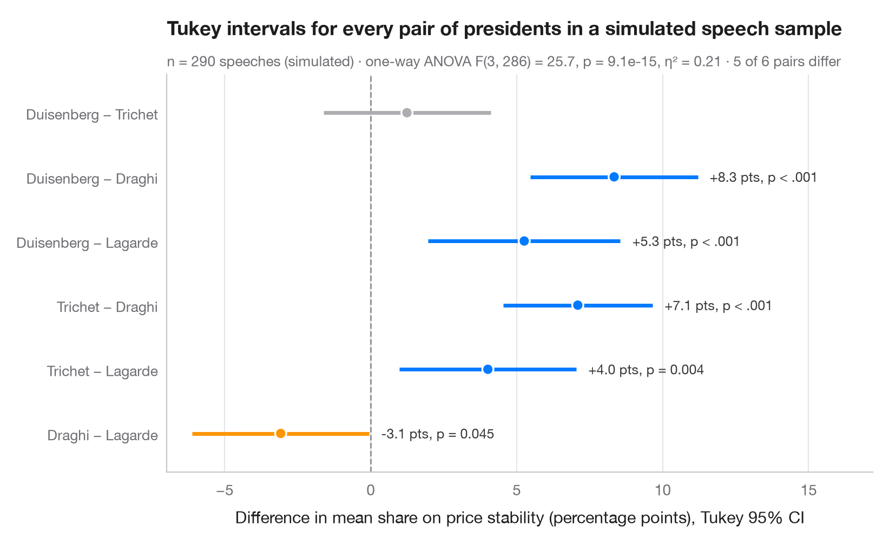

テューキーの HSD 区間
すべての平均値の差の対について、同時 95% 信頼区間を示します。

分散分析で「群間に差がある」とわかったあと、テューキーの HSD（honestly significant difference）は どの 対に差があるのかを教えてくれます。各行は平均値の差の1つの対を表し、すべての区間が 同時に 95% で成り立つように幅を広げた信頼区間を伴います。ゼロをまたがない区間には色を付けており、1つ目の群のほうが年齢が高い場合は青、低い場合はオレンジです。
データは statsmodels に同梱されている 1996年アメリカ全国選挙調査の回答者 944 人（sm.datasets.anes96）で、強い民主党支持から強い共和党支持までの政党帰属意識ごとの年齢を示しています。区間は statsmodels.stats.multicomp.pairwise_tukeyhsd、全体検定は scipy.stats.f_oneway で求めています。
コードおよび図中のテキストは英語です。
import matplotlib.pyplot as plt
import numpy as np
import pandas as pd
import statsmodels.api as sm
from scipy import stats
from statsmodels.stats.multicomp import pairwise_tukeyhsd
# Data: age by party identification (0 = strong Democrat ... 6 = strong Republican)
anes = sm.datasets.anes96.load_pandas().data
names = ["Strong Dem", "Weak Dem", "Lean Dem", "Independent",
"Lean Rep", "Weak Rep", "Strong Rep"]
anes["party"] = pd.Categorical(anes.PID.astype(int).map(dict(enumerate(names))), names)
# One-way ANOVA, then Tukey HSD on all 21 pairs
F, p = stats.f_oneway(*[g.age for _, g in anes.groupby("party", observed=True)])
k, n = len(names), len(anes)
eta2 = F * (k - 1) / (F * (k - 1) + n - k)
tukey = pairwise_tukeyhsd(anes.age, anes.party.cat.codes)
res = pd.DataFrame(tukey._results_table.data[1:], columns=tukey._results_table.data[0])
# statsmodels reports group2 − group1; flip to read "group1 − group2"
res = res.assign(diff=-res.meandiff, low=-res.upper, high=-res.lower,
label=[f"{names[a]} − {names[b]}" for a, b in zip(res.group1, res.group2)])
res = res.iloc[::-1].reset_index(drop=True) # first pair on top
colors = np.where(~res.reject, "#AEAEB2", np.where(res["diff"] > 0, "#007AFF", "#FF9500"))
fig, ax = plt.subplots(figsize=(8, 7))
y = np.arange(len(res))
ax.axvline(0, color="#8E8E93", lw=1, ls="--", zorder=1)
ax.hlines(y, res.low, res.high, color=colors, lw=2.5, zorder=2)
ax.scatter(res["diff"], y, s=55, color=colors, edgecolor="white", lw=1.2, zorder=3)
for yi, row in res[res.reject].iterrows():
ax.annotate(f"{row['diff']:+.1f} y, p = {row['p-adj']:.3f}", (row.high, yi), xytext=(8, 0),
textcoords="offset points", va="center", fontsize=9, color="#3A3A3C")
ax.set_yticks(y, res.label, fontsize=9.5)
ax.set_ylim(-0.7, len(res) - 0.3)
ax.grid(axis="x"); ax.grid(axis="y", visible=False)
ax.set_xlabel("Difference in mean age (years), Tukey 95% family-wise CI")
ax.set_title("Strong Democrats are older than weak and leaning Democrats", pad=26)
ax.text(0, 1.015, f"One-way ANOVA F({k - 1}, {n - k}) = {F:.2f}, p = {p:.3f}, η² = {eta2:.3f}"
f" · {res.reject.sum()} of {len(res)} pairs significant (Tukey HSD)",
transform=ax.transAxes, fontsize=9.5, color="#6E6E73")
plt.show()
図にはオプションの PyStatlas スタイル を使用しています。同じ見た目にするには plt.style.use("statlas.mplstyle") を追加してください。
引用方法
PyStatlas は Thierry Warin が作成・運営しています。研究や業務に役立った場合は、ぜひ引用してください。
Warin, T. (2026). Tukey HSD intervals. In PyStatlas: The Python Gallery of Statistical Graphics. https://warint.github.io/pystatlas/group-comparisons/tukey-hsd/
@misc{warin2026statlas,
author = {Warin, Thierry},
title = {PyStatlas: The Python Gallery of Statistical Graphics},
year = {2026},
howpublished = {\url{https://warint.github.io/pystatlas/}},
note = {Source code: https://github.com/warint/pystatlas}
}